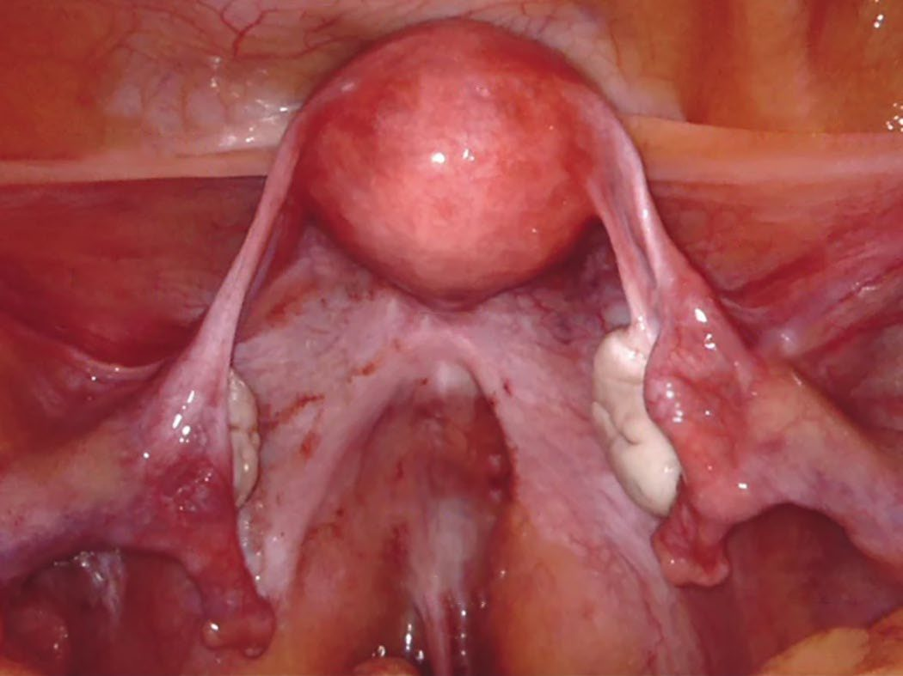

Gynaecology for the General Surgeon
Summary
Gynaecological disease reaches the general surgeon in two ways: as a differential for the acute abdomen, and as an unexpected finding at laparotomy. Ectopic pregnancy is the life-threatening one (acute abdominal pain with a positive beta-HCG and no sac on ultrasound) and significant shock and haemorrhage can follow [1]. Mittelschmerz, rupture of a graafian follicle 14 days after the first day of menses, causes pain that can be confused with appendicitis [1]. This page covers the pelvic ligaments, ectopic pregnancy, endometriosis, pelvic inflammatory disease, and the gynaecological cancers a general surgeon may encounter, including Krukenberg tumour.
Definition
Mittelschmerz is rupture of a graafian follicle, occurring 14 days after the first day of menses [1].
A Krukenberg tumour is a gastric cancer that has metastasised to the ovary, classically showing signet ring cells on pathology [1].
Meige's syndrome is a pelvic ovarian fibroma causing ascites and hydrothorax, and excision of the tumour cures the syndrome [1].
Pathophysiology
The four pelvic ligaments each carry something worth knowing [1]:
| Ligament | Contents or function |
|---|---|
| Round | Allows anteversion of the uterus |
| Broad | Contains the uterine vessels |
| Infundibular | Contains the ovarian artery, nerve and vein |
| Cardinal | Holds the cervix and vagina |
The commonest site of ectopic pregnancy is the ampullary portion of the fallopian tube [1].
Endometriosis can involve the rectum and cause bleeding during menses, with endoscopy showing a blue mass; the ovaries are the commonest site [1].

Clinical features
Ectopic pregnancy presents with acute abdominal pain, a positive beta-HCG and a negative ultrasound for a sac, and may also have a missed period, vaginal bleeding and hypotension [1].
Endometriosis presents with dysmenorrhoea, infertility and dyspareunia [1].
Pelvic inflammatory disease presents with pain, nausea, vomiting, fever and vaginal discharge, most commonly in the first half of the menstrual cycle [1].
Ovarian cancer presents with abdominal or pelvic pain, a change in stool or urinary habits, and vaginal bleeding [1], a set of symptoms that overlaps almost entirely with colorectal disease.
Vaginal bleeding in a postmenopausal patient is endometrial cancer until proved otherwise [1].
Etiology
Risk factors for ectopic pregnancy are previous tubal manipulation, pelvic inflammatory disease, and previous ectopic pregnancy [1].
Pelvic inflammatory disease carries an increased risk of infertility and ectopic pregnancy, and its risk factor is multiple sexual partners [1].
Ovarian cancer risk falls with oral contraceptives and bilateral tubal ligation, and rises with nulliparity, late menopause and early menarche [1].
Endometrial cancer is the commonest malignant tumour of the female genital tract, with risk factors of nulliparity, late first pregnancy, obesity, tamoxifen and unopposed oestrogen [1].
Vulvar cancer occurs in the elderly, nulliparous and obese, is usually unilateral, and is mostly squamous [1].
Diethylstilbestrol can cause clear cell carcinoma of the vagina, and botryoides is a rhabdomyosarcoma occurring in young girls [1].
Diagnosis
Ultrasound is very good at diagnosing disorders of the female genital tract [1].
Two beta-HCG thresholds anchor early pregnancy imaging: the gestational sac is seen at a beta-HCG of 1,500, and the fetal pole at 6,000 [1]. Most pregnancies can be seen on ultrasound at 6 weeks [1].
Pelvic inflammatory disease is diagnosed on cervical motion tenderness, cervical cultures and a positive Gram stain [1]. The organisms are distinguished by their appearance: HSV gives vesicles, HPV condylomata, syphilis a chancre with positive dark-field microscopy, and gonococcus diplococci [1].
The types of miscarriage are separated by the os and the heartbeat [1]: missed, first-trimester bleeding, closed os, sac present on ultrasound but no heartbeat; threatened (first-trimester bleeding with a positive heartbeat; incomplete) tissue protruding through the os.
Thresholds and severity
Ovarian cancer staging [1]:
| Stage | Location |
|---|---|
| I | One or both ovaries only |
| II | Limited to the pelvis |
| III | Spread throughout the abdomen |
| IV | Distant metastases |
Bilateral ovarian involvement is still stage I, and the commonest initial site of regional spread is the other ovary [1].
Vulvar cancer treatment turns on 2 cm: stage I disease under 2 cm gets wide local excision with 2 cm margins and ipsilateral inguinal node dissection; stage II or greater, above 2 cm, gets radical vulvectomy of both labia with bilateral inguinal dissection, and postoperative radiotherapy if margins are close, under 1 cm [1].
Uterine polyps have a very low chance of malignancy, 0.1% [1].
Bailey & Love devotes a chapter to gynaecology within its abdominal section, reflecting how often gynaecological pathology presents to general surgeons as an acute abdomen [3].
Endometriosis typically appears at laparoscopy as superficial "powder burn" lesions, and MRI can detect the haemosiderin that accompanies deposits in pelvic endometriosis [3].
Endometriosis is described as a common inflammatory condition [3], which is worth holding onto when a young woman presents repeatedly with pelvic pain and normal surgical investigations.
The gynaecological causes of acute abdominal pain, complications of menstruation including Mittelschmerz and endometriosis, ovarian cyst bleed, rupture or torsion, tubo-ovarian infection, and ectopic pregnancy, are set out alongside the surgical differential on the Acute Abdomen page [4].
Treatment and Management
Ectopic pregnancy is managed by haemodynamic status. A stable patient receives methotrexate or salpingotomy; an unstable patient undergoes salpingectomy [1].
Endometriosis is treated with oral contraceptives [1].
Pelvic inflammatory disease is treated with ceftriaxone and doxycycline [1].
Ovarian cancer is treated by total abdominal hysterectomy and bilateral oophorectomy at all stages, plus pelvic and para-aortic lymph node dissection, omentectomy, four-quadrant washings, and chemotherapy with cisplatin and paclitaxel [1]. Debulking can be effective, including omentectomy, which helps intraperitoneal chemotherapy and radiotherapy [1].
Endometrial cancer is approached abdominally rather than transvaginally [1].
Radiotherapy is used for most vaginal cancers [1].
Procedural interventions
The omentectomy performed for ovarian cancer is a general surgical manoeuvre with an oncological purpose, improving the distribution of intraperitoneal chemotherapy and radiotherapy [1].
Salpingotomy preserves the tube in a stable patient; salpingectomy sacrifices it to control haemorrhage in an unstable one [1].
Complications
The complications of pelvic inflammatory disease are persistent pain, infertility and ectopic pregnancy [1], the last of which closes a loop, since PID is also a risk factor for it.
Ectopic pregnancy can cause significant shock and haemorrhage [1], and is the gynaecological diagnosis a general surgeon cannot afford to miss in a woman of childbearing age with abdominal pain.
Outcomes
Ovarian cancer is the leading cause of gynaecological death [1].
Clear cell histology carries the worst prognosis in both ovarian and endometrial cancer [1], the same subtype, the same message, in two different organs.
References
- The ABSITE Review, 2022, Ch. 40 Gynecology
- Sabiston Textbook of Surgery, 22nd ed., Ch. 11 Advances and Training Considerations in Laparoscopic Surgery
- Bailey & Love's Short Practice of Surgery, 28th ed., Ch. 87 Gynaecology
- Oxford Handbook of Clinical Surgery, 5th ed., Ch. 26 Emergency surgery topics